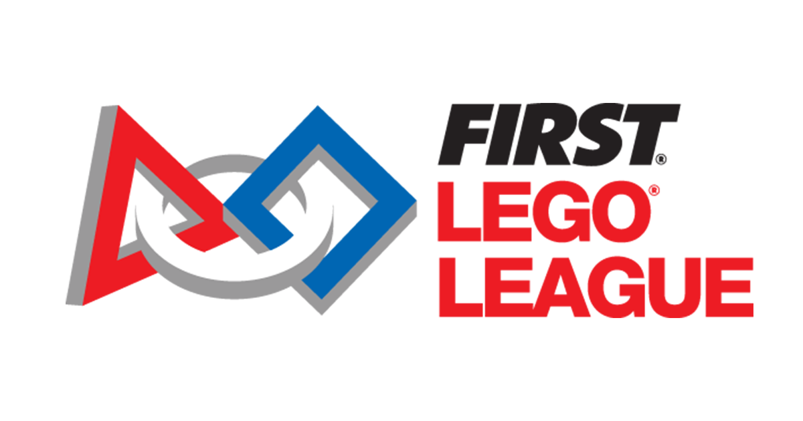

チーム紹介

Tezukayama Thymeは
中学1年生5人、
中学2年生3人の
計8人で活動しています。
私たちは協力して上位を狙っていきます！
実績
🎉大阪予選大会通過🎉
初めに
解決したい事柄(10月)
私たち、プロジェクト班は電気を『作る』と『使う』の間である『貯める』ということに着目しました。
そこで5つの会社に問い合わせを行って様々なことを聞きました。
企業に提案＆実験(11月)
企業への問い合わせを行った結果「NAS電池」や「レドックスフロー電池」などを教えていただき、すごく興味が湧いてきました。
そのため、私たちで『レドックスフロー電池』の実験をすることにしました。
実験の内容としては色の変わる電池というもので、高校化学の知識と専門家の教えを活用しながらレドックスフロー電池のモデルを作り動かしました。
うまくいくか心配でしたが、しっかりと色が変わり実験によって電解液に電気を貯めることができ、私たちの提案がはっきりしました！
実験前
実験後
NAS電池(日本ガイシさんが手掛けた、大型の電気を貯めるコンテナ)
プレゼンテーションの練習(12月)
すべてのことが終わり、これらをまとめるスライドを大会に向けて作成しました。
このプロジェクト班で1日少なくとも3時間は話し合いどのようにすれば進めやすいか、聞き手が分かりやすいかなど
様々なことを話し合いながらスライドを組み立てていき、完成後はしっかりと練習しました！
ロボット
core Robot
モーターを適切な位置に取り付け
上に装備を乗せやすい直方体型の形にしました。
アタッチメント
core Robotに取り付けることが容易なものを作成し、
短時間で次のプロセスに移ることが可能になりました。
プログラム
正確性
Tezukayama-Thyme-Robot班は正確性を重点的に行いました。
まず、進むロボットの長さがどのぐらいかを分かりやすくするために、
回転数→cmに変更できるものをタイヤの直径と回転数から作り出しました。
それにより、比較的簡単に正確性を上げることに繋がりました！
ほかにも、実行するプログラムを簡単に選べるように選択する所を自作しました。
何時間もしっかりと練習したので良い結果を残していければと思います！
Project
私たちは8人のチームで、始めたばかりの頃はまだまだ意見の一致やまとまりが少なく、しっかりとまとめながら話をしようという事になり、
話した内容をわかりやすく黒板に書き、データ化したり写真を取ったりしました
チーム紹介文
～チーム代表のコメント～
最初は、お互いの名前も知らずに同じ学年で話したりしていましたが、高2の先輩の助けもあって、今ではお互いに仲良く話せる仲になりました。
イノベーションプロジェクトでは、9月から準備をし始めましたが、10月に入りかける直前まで、テーマも何も決まりませんでした。
ロボットも、プレゼンが進まないのでなかなか取り組めず両者とも常に時間が足りませんでした。
10月は中間テストや、中2は学年旅行があったので、ほぼ活動ができず、中2は学年旅行にもパソコンを持って行ってFLLの準備をやるほどでした。
みんなで助け合ってここまで来たので、チームとして、素晴らしい大会となることを期待しています。